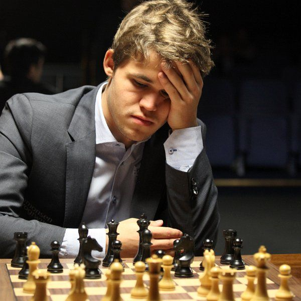

I started playing chess during the quaratine after finishing my senior year of high school. During the summer, I religiously watched Agadmator's chess channel to learn about top games between top grandmasters around the world. It drew me to the strategitc game that features infinite possibilites. It is a game of mind and creativity.
Magnus Carlsen is my favoirte chess player. Not only because he is widely considered to be the greatest human chess player, but also because his eccentric sense of humor and style.